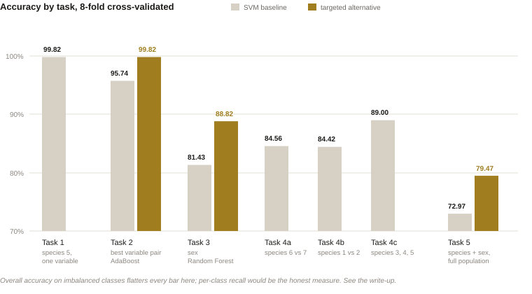
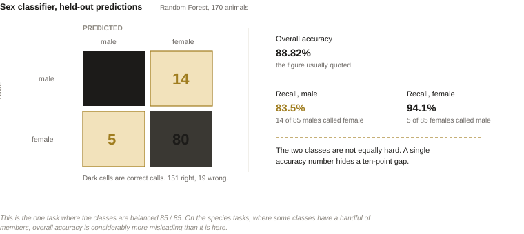

Telling eight lizard species apart from body measurements
These lizards look almost identical and colour is an unreliable guide. Given a table of body measurements, can a classifier do better than an expert eye?
Tools Python, scikit-learn — support vector machines, AdaBoost, Random Forest
Timeframe Apr – Jun 2025
Role [Team of 4 — I owned the SVM models and the sensitivity analysis. Confirm before publishing.]

Morphometric data Physical measurements of an animal — body length, head width, scale and pore counts. Twenty-three such variables were available per lizard.
Kernel A support vector machine separates classes with a straight boundary. A kernel is a way of bending the space first, so that classes which cannot be separated by a line become separable.
What was the problem?
Eight species of wall lizard in the genus Darevskia are close enough in appearance that they cannot be reliably told apart by eye. Females tend to be paler than males, but colour judgement varies between observers and does not hold consistently, so the field falls back on measuring the animals.
That leaves an awkward gap: the measurements exist, but knowing which combination of twenty-three variables separates which species is not something you can eyeball either. Getting it wrong matters, because species identification is what conservation work, breeding programmes and population estimates are built on. The task was to find numerical criteria — and the harder part, to find criteria that stay honest on a dataset of only a few hundred animals.
Cross-validation Splitting the data into eight parts, training on seven and testing on the one held back, then rotating. With a small sample this is the only way to get an accuracy estimate that is not just a description of the training set.
The decision I didn't take The integrated model originally used an SVM for both stages. Once Random Forest beat it on sex, I replaced that stage rather than keeping one method for tidiness — the coherent-looking choice would have been the worse one.
What did I build?
A support vector machine as the general-purpose backbone, applied across five tasks: isolating one species from the rest using a single variable, finding the best pair of predictors, classifying sex, separating species that live side by side, and finally classifying both species and sex across the whole population. SVMs are designed for two-class problems, so extending them to the multi-class cases was the main modelling work. All results are eight-fold cross-validated, with kernel chosen per task rather than fixed.
Where the SVM plateaued, I built targeted alternatives instead of tuning it further. AdaBoost — which repeatedly re-weights the examples it got wrong — took the best-pair task from 95.74% to 99.82%. Random Forest with a preprocessing pipeline (standardisation, then principal component analysis to reduce dimensions) took sex classification from 81.43% to 87.65%, and to 88.82% after dropping the variables that information gain showed were contributing nothing.
The final model is a two-stage cascade: classify sex first, then species within that sex. Sensitivity analysis over kernels, weak-classifier counts, learning rates, tree counts and bootstrapping confirmed the settings were chosen rather than lucky — the results move only slightly under parameter changes, except for turning bootstrapping off, which cost about six points.
Recall Of all the animals that really were male, the share the model called male. Accuracy averages over the classes and can look high while one class is being missed badly; recall is reported per class and cannot hide that.
What did I find?
Single-species isolation is close to solved: 99.82% accuracy separating species 5 using right-side femoral pore counts alone. The harder tasks give a clear ordering of difficulty — adjacent species pairs came in at 84–89%, sex at 88.82% after switching to Random Forest, and the full eight-species-plus-sex problem at 79.47%, up from 72.97% for the all-SVM version.
Two results are worth more than the accuracy numbers. First, the most informative variables are not the obvious ones: scale and pore counts outperformed overall body size, and the single most important predictor of sex was the ventral scale count along the midline. Second, removing weakly informative variables improved accuracy rather than merely simplifying the model, which is the signature of a small dataset where extra features are mostly noise.

Why admit limits A 99.82% accuracy on a class with three members in the test fold is not what it looks like. Naming that is more useful than the number.
What would I do differently?
I would stop reporting accuracy. The classes are badly imbalanced — in some folds the rare species has a handful of specimens, so a model that predicts "not species 5" every time already scores in the high nineties. Per-class recall and F1, with confidence intervals from the cross-validation folds, would describe the models honestly; overall accuracy flatters them.
I would also resist the exhaustive feature search. Iterating over every subset of twenty-three variables and keeping the best is a good way to find a combination that fits this particular sample, and the improvement it reports is partly selection effect. A nested cross-validation, with feature selection inside the training fold, would give a smaller and more trustworthy number.